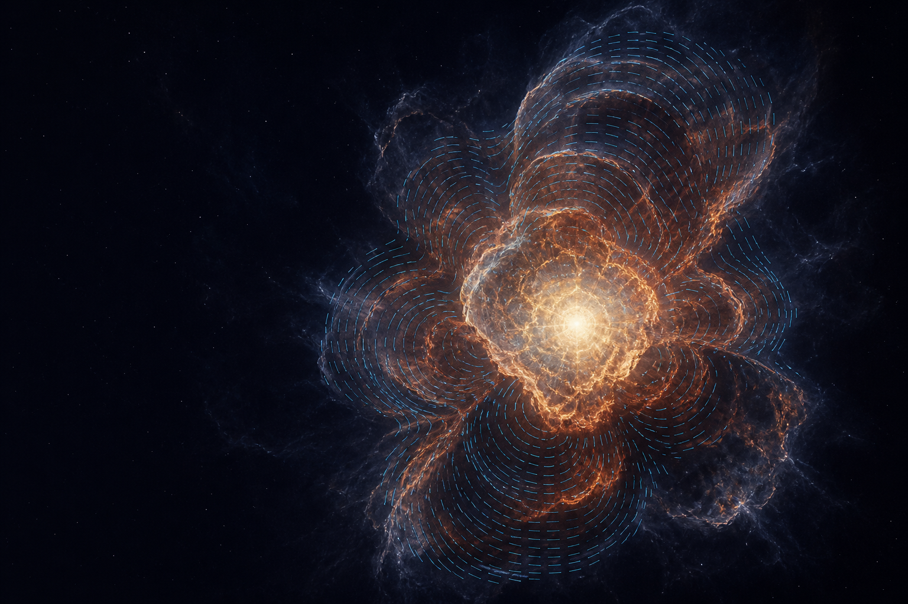

TSINGHUA ASTROPHYSICS · POLARIMETRY
读取光的方向，
重建爆炸的形状。
我们从微弱的偏振信号中测量超新星不可直接分辨的几何，追踪激波如何冲出恒星、抛射物如何展开，以及爆发前的物质如何塑造观测。
POLARIZATION FIELD
图中短线表示偏振电矢量，其方向沿抛射物轮廓的切向分布，垂直于局部径向。
Q / U
OBSERVE · MEASURE · MODEL
01快速响应
捕捉爆发初刻
02光谱偏振
解析非球对称性
03三维建模
连接信号与结构
WHY POLARIZATION / 为什么是偏振
望远镜只看见一个光点。
偏振让我们读出它的方向。
当一个球对称的电子散射光球被投影到天空时，不同方向的电矢量彼此抵消；一旦抛射物、元素分布或外部环境偏离球对称，抵消便不再完整，净偏振由此成为爆炸几何的探针。
电矢量 ⟂ 径向
RESEARCH / 研究方向
把爆炸的几何，
变成可测量的物理。
团队连接观测、数据分析与理论计算，覆盖超新星从激波突破到晚期星周相互作用的完整演化。
01OBSERVATION
超新星光谱偏振
利用连续谱和谱线偏振，测量抛射物整体形状、不同元素的空间分布与观测视角。
SPECTROPOLARIMETRY
02TIME DOMAIN
爆发早期与激波突破
在爆发后数小时至数天内快速响应，捕捉恒星表面和致密星周物质尚未被抛射物掩盖时的几何。
RAPID RESPONSE
03SIMULATION
三维偏振辐射转移
以蒙特卡洛方法连接偏振信号、非球对称抛射物、星周盘或环结构及爆发前质量损失。
RADIATIVE TRANSFER
FEATURED WORK · 2025
SN 2024ggi / SCIENCE ADVANCES
爆发约 1.2 天后，
看见贯穿恒星爆炸的对称轴。
团队取得了极早期光谱偏振观测。测量显示，激波突破与随后显现的富氢包层共享清晰的轴对称结构，为理解大质量恒星爆炸机制提供直接的几何约束。
进入亮点工作页面 ↗
FIRST EPOCH≈ 1.2爆发后天数
GEOMETRY1 AXIS持续的对称轴
QU
PEOPLE / 团队成员
共同追踪
稍纵即逝的宇宙。
团队立足清华大学物理系，在观测与理论之间协作，围绕超新星偏振、时域天文与爆发几何开展研究。
 PI / 01
PI / 01
PRINCIPAL INVESTIGATOR · 团队负责人
杨轶 Yi Yang
清华大学物理系助理教授
观测天文学家，通过偏振光研究超新星及其他宇宙爆发现象的几何、早期演化与宇宙尘埃。
XW
POSTDOCTORAL FELLOW
文旭东 Xudong Wen
博士后
研究超新星偏振的理论解释与三维蒙特卡洛辐射转移，关注爆炸非对称性与星周相互作用。
03莫
GRADUATE STUDENT
莫森宇
研究生
04陶
UNDERGRADUATE
陶润泽
本科生
05刘
UNDERGRADUATE
刘乐融
本科生
06张
UNDERGRADUATE
张子恒
本科生
PUBLICATIONS / 论文
近期与代表性工作
团队成员的完整论文列表可在 NASA ADS ↗ 查看。
- 2026
APJL · ACCEPTED
Pinning Down the Geometry of the Type Ic Broad-Line Supernova 2026gzf
Xudong Wen, Yi Yang, Jing Lu, et al.
- 2025
SCIENCE ADVANCES
An axisymmetric shock breakout indicated by prompt polarized emission from the type II supernova 2024ggi
Yi Yang, Xudong Wen, Lifan Wang, et al.
- 2025
ARXIV PREPRINT
Spectropolarimetric Evolution of SN 2023ixf: an Asymmetric Explosion in a Confined Aspherical Circumstellar Medium
Sergiy S. Vasylyev, Luc Dessart, Yi Yang, et al.
- 2024
THE ASTROPHYSICAL JOURNAL
Supernova Polarization Signals From the Interaction with a Dense Circumstellar Disk
Xudong Wen, He Gao, Yi Yang, et al.
- 2023
THE ASTROPHYSICAL JOURNAL
Polarization Signature of Companion-Fed Supernovae Arising from BH–NS/BH Progenitor Systems
Xudong Wen, He Gao, Shunke Ai, et al.
- 2023
THE ASTROPHYSICAL JOURNAL LETTERS
Early-time Spectropolarimetry of the Aspherical Type II Supernova SN 2023ixf
Sergiy S. Vasylyev, Yi Yang, Alexei V. Filippenko, et al.
- 2023
MONTHLY NOTICES OF THE RAS
Spectropolarimetry of the Type IIP supernova 2021yja: an unusually high continuum polarization
Sergiy S. Vasylyev, Yi Yang, Kishore C. Patra, et al.
- 2023
MONTHLY NOTICES OF THE RAS
The Core Normal Type Ia Supernova 2019np: An Overall Spherical Explosion with an Aspherical Surface Layer and an Aspherical ⁵⁶Ni Core
Peter Hoeflich, Yi Yang, Dietrich Baade, et al.
- 2023
MONTHLY NOTICES OF THE RAS
The Interaction of Supernova 2018evt with a Substantial Amount of Circumstellar Matter
Yi Yang, Dietrich Baade, Peter Hoeflich, et al.
- 2022
THE ASTROPHYSICAL JOURNAL
Spectropolarimetry of the Thermonuclear Supernova 2021rhu: High Calcium Polarization 79 Days After Peak
Yi Yang, Huirong Yan, Lifan Wang, et al.
- 2021
MONTHLY NOTICES OF THE RAS
Spectropolarimetry of the Type Ia SN 2019ein rules out significant global asphericity of the ejecta
Kishore C. Patra, Yi Yang, Thomas G. Brink, et al.
- 2020
THE ASTROPHYSICAL JOURNAL
The Young and Nearby Normal Type Ia Supernova 2018gv: UV–Optical Observations and the Earliest Spectropolarimetry
Yi Yang, Peter A. Hoeflich, Dietrich Baade, et al.
- 2018
THE ASTROPHYSICAL JOURNAL
Mapping Circumstellar Matter with Polarized Light: The Case of Supernova 2014J in M82
Yi Yang, Lifan Wang, Dietrich Baade, et al.
OPEN RESEARCH / 每日更新
ArXiv Astrophysics
浏览天体物理学最新预印本，涵盖高能天体物理、太阳与恒星、星系、宇宙学、仪器方法等方向。
进入 ArXiv 天文专栏 ↗